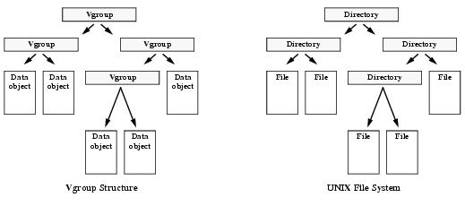
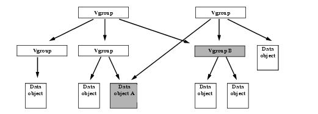
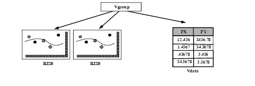
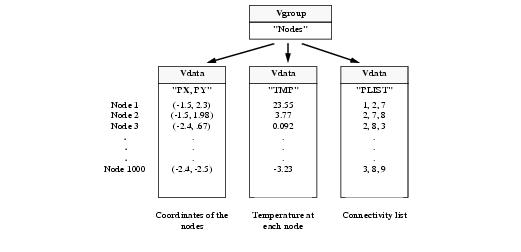
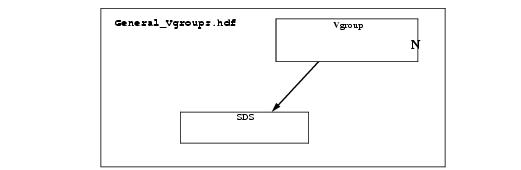

HDF User’s Guide
Version 4.2r4[Top] [Prev][Next]
|
|
HDF User’s GuideVersion 4.2r4 |
[Top] [Prev][Next] |
Chapter 5 -- Vgroups (V API)
5.1 Chapter Overview
This chapter describes the vgroup data model and the Vgroup interface (also called the V interface or the V API). The first section describes the vgroup data model. The second section introduces the Vgroup interface, followed by a presentation of a programming model for vgroups. The next three sections describe the use of the Vgroup interface in accessing and creating vgroups. The final two sections cover vgroup attributes and obsolete Vgroup interface routines.
5.2 The Vgroup Data Model
A vgroup is a structure designed to associate related data objects. The general structure of a vgroup is similar to that of the UNIX file system in that the vgroup may contain references to other vgroups or HDF data objects just as the UNIX directory may contain subdirectories or files (see Figure 5a). In previous versions of HDF, the data objects in a vgroup were limited to vdatas and vgroups. The data objects that belong to a vgroup are often referred to as the vgroup's members.
FIGURE 5a Similarity of the HDF Vgroup Structure and the UNIX File System5.2.1 Vgroup Names and Classes
A vgroup has a required vgroup name and an optional vgroup class associated with it. The vgroup name and class are used in describing and classifying the data objects belonging to the vgroup.
A vgroup name is a character string and is used to semantically distinguish between vgroups in an HDF file. If the user does not assign a name to a vgroup, then the HDF library will assign a zero-length string as the name of the vgroup. Multiple vgroups in a file can have the same name; however, unique names make it easier to distinguish among vgroups and are recommended.
A vgroup class is a character string and can be used to classify data objects by their intended use. For example, a vdata object named "Storm Tracking Data - 5/11/94" and another vdata object named "Storm Tracking Data - 6/23/94" can be grouped together under a vgroup named "Storm Tracking Data - 1994". If the data was collected in Anchorage, Alaska the class name might be "Anchorage Data", particularly if other vgroups contain storm track data collected in different locations. A class name is not required for a vgroup, therefore the HDF library will not assign a class name to the vgroup if one is not defined by the user.
The specific use of the vgroup name and class name is solely determined by HDF users.
5.2.2 Vgroup Organization
There are many ways to organize vgroups through the use of the Vgroup interface. Vgroups may contain any number of vgroups and data objects, including data objects and vgroups that are members of other vgroups. Therefore, a data object may have more than one parent vgroup. For example, Data object A and Vgroup B, shown in Figure 5b, are members of multiple vgroups with different organizational structures.
FIGURE 5b Sharing Data Objects among VgroupsA vgroup can contain any combination of data objects. Figure 5c illustrates a vgroup that contains two raster images and a vdata.
FIGURE 5c A Vgroup Containing Two 8-Bit Raster Images, or RIS8 Objects, and a Vdata5.2.3 An Example Using Vgroups
Although vgroups can contain any combination of HDF data objects, it is often useful to establish conventions on the content and structure of vgroups. This section, with the illustration in Figure 5d, describes an example of a vgroup convention that is used by scientific and graphics programmers to describe the surfaces of a mathematical or material object as well as its properties.
This vgroup consists of one list of coordinate data, one list of connectivity data, and one list of node property data. These three lists are stored in separate vdata objects within the vgroup.
Each 2-dimensional coordinate in the list of coordinate data defines the relative location of a vertex, or node. Each entry in the list of connectivity data is an ordered list of node numbers which describes a polygon. This ordered list is referred to as the connectivity list. For example, the number "2" as an item in a connectivity list would represent the second entry in the node table. Node properties are user-defined values attached to each node within the polygon and can be numbers or characters.
For example, consider a heated mesh of 400 triangles formed by connecting 1000 nodes. A vgroup describing this mesh might contain the coordinates of the vertices, the temperature value of the vertices, and a connectivity list describing the edges of the triangles.
FIGURE 5d Vgroup Structure Describing a Heated Mesh5.3 The Vgroup Interface
The Vgroup interface consists of routines for creating and accessing vgroups, and getting information about vgroups and their members.
5.3.1 Vgroup Interface Routines
Vgroup interface routine names are prefaced by "V" in C and by "vf" in FORTRAN-77. These routines are categorized as follows:
- Access/Create routines control access to the Vgroup interface and to individual vgroups.
- Manipulation routines modify vgroups' characteristics, and add and delete vgroups' members.
- Vgroup inquiry routines obtain information about vgroups. Some of these routines are useful for locating vgroups in a file.
- Member inquiry routines obtain information about members of vgroups.
- Attributes routines provide information about vgroups' attributes.
The Vgroup interface routines are listed in Table 5A below and described in the following sections.
TABLE 5A Vgroup Interface Routines
5.3.2 Identifying Vgroups in the Vgroup Interface
The Vgroup interface identifies vgroups in several ways. In some cases, a vgroup can be accessed directly through the use of its unique reference number. In other cases, the reference number and the routine Vattach are used to obtain a vgroup identifier. The reference number of a vgroup can be obtained from the name or the class of the vgroup, or by sequentially traversing the file. The concept of reference number is discussed in Section 2.2.2.1 on page 8.
When a vgroup is attached or created, it is assigned an identifier, called vgroup id. After a vgroup has been attached or created, its identifier is used by the Vgroup interface routines in accessing the vgroup.
5.4 Programming Model for the Vgroup Interface
The programming model for accessing vgroups is as follows:
These steps correspond to the following sequence of function calls:
C: file_id = Hopen(filename, file_access_mode, num_dds_block);
status = Vstart(file_id);
vgroup_id = Vattach(file_id, vgroup_ref, vg_access_mode);
<Optional operations>
status = Vdetach(vgroup_id);
status = Vend(file_id);
status = Hclose(file_id);
FORTRAN: file_id = hopen(filename, file_access_mode, num_dds_block)
status = vfstart(file_id)
vgroup_id = vfatch(file_id, vgroup_ref, vg_access_mode)
<Optional operations>
status = vfdtch(vgroup_id)
status = vfend(file_id)
status = hclose(file_id)
The calling program must obtain a separate vgroup identifier for each vgroup to be accessed.
5.4.1 Accessing Files and Vgroups: Vstart and Vattach
An HDF file must be opened by Hopen before it can be accessed using the Vgroup interface. Hopen is described in Chapter 2, HDF Fundamentals.
The Vgroup interface routines are used in a similar manner to the Vdata interface routines. Before performing operations on a vgroup, a calling program must call Vstart for every file to be accessed. Vstart initializes the internal vgroup structures in a file. Vstart takes one argument, the file identifier returned by Hopen, and returns either
SUCCEED(or0) orFAIL(or-1). Note that the Vstart routine is used by both the Vdata and Vgroup interfaces.The calling program must also call one Vattach for every vgroup to be accessed. Vattach provides access to an individual vgroup for all read and write operations. Vattach takes three arguments: file_id, vgroup_ref, and vg_access_mode, and returns either a vgroup identifier or
FAIL(or-1).The argument file_id is the file identifier returned by Hopen. The parameter vgroup_ref is the reference number that identifies the vgroup to be accessed. Specifying vgroup_ref with a value of
-1will create a new vgroup; specifying vgroup_ref with a nonexistent reference number will return an error code ofFAIL(or-1); and specifying vgroup_ref with a valid reference number will initiate access to the corresponding vgroup.When a new vgroup is created, it does not have any members. Additional operations must be performed to add other HDF data objects to the vgroup. Refer to Section 5.5 on page 203 for information.
To access an existing vdata, its reference number must be obtained. The Vgroup interface includes two routines for this purpose, Vfind and Vgetid. Vfind can be used to obtain the reference number of a vgroup when the vgroup's name is known. Vgetid can be used to obtain the reference number by sequentially traversing the file. These routines are discussed in Section 5.6.1.5 on page 219 and Section 5.6.1.2 on page 217.
The parameter vg_access_mode in Vattach specifies the type of access ("r" or "w") required for operations on the selected vgroup.
Multiple attaches may be made to a vgroup, which will result in several vgroup identifiers being assigned to the same vgroup. Termination must be properly handled as described in the next section.
The parameters of Vstart and Vattach are defined in Table 5B on page 203.
5.4.2 Terminating Access to Vgroups and Files: Vdetach and Vend
Successfully terminating access to a vgroup requires one Vdetach call for every Vattach call made. Similarly, successfully terminating access to the Vgroup interface requires one Vend call for every Vstart call made.
Vdetach terminates access to a vgroup by updating internal library structures and freeing all memory associated with the vgroup and allocated by Vattach. Once a vgroup is detached, its identifier is invalid and any attempts to access this vgroup identifier will result in an error condition. Vdetach takes one argument, vgroup_id, the vgroup identifier returned by Vattach, and returns either
SUCCEED(or0) orFAIL(or-1).Vend releases all internal data structures allocated by Vstart. Attempts to use the Vgroup interface identifier after calling Vend will produce errors. Vend takes one argument, file_id, the file identifier returned by Hopen, and returns either
SUCCEED(or0) orFAIL(or-1). Note that the first Vend call to a file must occur after all Vdetach calls for the vgroups in the same file have been made. Note also that the Vend routine is used by both the Vdata and Vgroup interfaces.Hclose must be used to terminate access to the HDF file and only after all proper Vend calls are made. Hclose is described in Chapter 2, HDF Fundamentals.
The parameters of Vdetach and Vend are also defined in Table 5B.
TABLE 5B Vstart, Vattach, Vdetach, and Vend Parameter Lists5.5 Creating and Writing to a Vgroup
There are two steps involved in the creation of a vgroup: creating the vgroup and inserting data objects into it. Any HDF data object can be inserted into a vgroup. Creation and insertion operations are usually performed at the same time, but that is not required.
HDF provides two routines that insert an HDF data object into a vgroup, Vaddtagref and Vinsert. Vaddtagref can insert any HDF data object into a vgroup, but requires that the tag and reference number of the object be available. Refer to Section 2.2.2.1 on page 8 for the description of tags and reference numbers for HDF data objects. Vinsert only inserts a vdata or a vgroup to a vgroup, but only requires the identifier of the vdata or the vgroup.
Creating a vgroup with a member involves the following steps:
These steps correspond to the following sequence of function calls:
C: file_id = Hopen(filename, file_access_mode, num_dds_block);
status = Vstart(file_id);
vgroup_id = Vattach(file_id, vgroup_ref, vg_access_mode);
status = Vsetname(vgroup_id, vgroup_name);
status = Vsetclass(vgroup_id, vgroup_class);
/* Use either Vinsert to add a vdata or a vgroup, or
Vaddtagref to add any data object */
num_of_tag_refs = Vaddtagref(vgroup_id, obj_tag, obj_ref);
OR obj_pos = Vinsert(vgroup_id, v_id);
status = Vdetach(vgroup_id);
status = Vend(file_id);
status = Hclose(file_id);
FORTRAN: file_id = hopen(filename, file_access_mode, num_dds_block)
status = vfstart(file_id)
vgroup_id = vfatch(file_id, vgroup_ref, vg_access_mode)
status = vfsnam(vgroup_id, vdata_name)
status = vfscls(vgroup_id, vdata_class)
C Use either Vinsert to add a vdata or a vgroup, or Vaddtagref to
C add any data object
num_of_tag_refs = vfadtr(vgroup_id, obj_tag, obj_ref)
OR obj_pos = vfinsrt(vgroup_id, v_id)
status = vfdtch(vgroup_id)
status = vfend(file_id)
status = hclose(file_id)
The parameter v_id in the calling sequence is either a vdata or vgroup identifier. The parameter vgroup_id is the vgroup identifier returned by Vattach.
When a new vgroup is created, the value of vgroup_ref must be set to
-1and the value of vg_access_mode must be "w".5.5.1 Assigning a Vgroup Name and Class: Vsetname and Vsetclass
Vsetname assigns a name to a vgroup. The parameter vgroup_name is a character string with the name to be assigned to the vgroup. If Vsetname is not called, the vgroup name is set to a zero-length character string. A name may be assigned and reset any time after the vgroup is created.
Vsetclass assigns a class to a vgroup. The parameter vgroup_class is a character string with the class name to be assigned to the vgroup. If Vsetclass is not called, the vgroup class is set to a zero-length string. As with the vgroup names, the class may be set and reset at any time after the vgroup is created.
Vsetname and Vsetclass return either
SUCCEED(or0) orFAIL(or-1). The parameters of these routines are further described in Table 5C on page 205.5.5.2 Inserting Any HDF Data Object into a Vgroup: Vaddtagref
Vaddtagref inserts HDF data objects into the vgroup identified by vgroup_id. HDF data objects may be added to a vgroup when the vgroup is created or at any point thereafter.
The parameters obj_tag and obj_ref in Vaddtagref are the tag and reference number, respectively, of the data object to be inserted into the vgroup. Note that duplicated tag and reference number pairs are allowed.
Vaddtagref returns the total number of tag and reference number pairs, i.e., the total number of data objects, in the vgroup if the operation is successful, and
FAIL(or-1) otherwise. The parameters of Vaddtagref are further described in Table 5C.Note that Vaddtagref does not verify that the tag and reference number exist.
5.5.3 Inserting a Vdata or Vgroup Into a Vgroup: Vinsert
Vinsert is a routine designed specifically for inserting vdatas or vgroups into a parent vgroup. To use Vinsert, you must provide the identifier of the parent vgroup, vgroup_id, as well as the identifier of the vdata or vgroup to be inserted, v_id.
The parameter v_id of Vinsert is either a vdata identifier or a vgroup identifier, depending on whether a vdata or vgroup is to be inserted.
Vinsert returns the index of the inserted vdata or vgroup if the operation is successful, and
FAIL(or-1) otherwise. The parameters of Vinsert are further defined in Table 5C.TABLE 5C Vsetname, Vsetclass, Vaddtagref, and Vinsert Parameter ListsEXAMPLE 1. Creating HDF Files and VgroupsThis example illustrates the use of Hopen/hopen, Vstart/vfstart, Vattach/vfatch, Vdetach/vfdtch, Vend/vfend, and Hclose/hclose to create and to access two vgroups in an HDF file.
The program creates the HDF file, named "Two_Vgroups.hdf", and two vgroups stored in the file. Note that, in this example, the program only create two empty vgroups.
C:#include "hdf.h" #define FILE_NAME "Two_Vgroups.hdf" main() { /************************* Variable declaration **************************/ intn status_n; /* returned status for functions returning an intn */ int32 status_32, /* returned status for functions returning an int32 */ vgroup_ref = -1, vgroup1_id, vgroup2_id, file_id; /********************** End of variable declaration **********************/ /* * Create the HDF file. */ file_id = Hopen (FILE_NAME, DFACC_CREATE, 0); /* * Initialize the V interface. */ status_n = Vstart (file_id); /* * Create the first vgroup. Note that the vgroup reference number is set * to -1 for creating and the access mode is "w" for writing. */ vgroup1_id = Vattach (file_id, vgroup_ref, "w"); /* * Create the second vgroup. */ vgroup2_id = Vattach (file_id, vgroup_ref, "w"); /* * Any operations on the vgroups. */ /* * Terminate access to the first vgroup. */ status_32 = Vdetach (vgroup1_id); /* * Terminate access to the second vgroup. */ status_32 = Vdetach (vgroup2_id); /* * Terminate access to the V interface and close the HDF file. */ status_n = Vend (file_id); status_n = Hclose (file_id); }FORTRAN:program create_vgroup implicit none C C Parameter declaration C character*15 FILE_NAME C parameter (FILE_NAME = 'Two_Vgroups.hdf') integer DFACC_CREATE parameter (DFACC_CREATE = 4) C C Function declaration C integer hopen, hclose integer vfstart, vfatch, vfdtch, vfend C C**** Variable declaration ******************************************* C integer status integer file_id integer vgroup1_id, vgroup2_id, vgroup_ref C C**** End of variable declaration ************************************ C C C Create the HDF file. C file_id = hopen(FILE_NAME, DFACC_CREATE, 0) C C Initialize the V interface. C status = vfstart(file_id) C C Create the first vgroup. Note that the vgroup reference number is set C to -1 for creating and the access mode is 'w' for writing. C vgroup_ref = -1 vgroup1_id = vfatch(file_id, vgroup_ref, 'w') C C Create the second vgroup. C vgroup2_id = vfatch(file_id, vgroup_ref, 'w') C C Any operations on the vgroups. C C .............................. C C Terminate access to the first vgroup. C status = vfdtch(vgroup1_id) C C Terminate access to the second vgroup. C status = vfdtch(vgroup2_id) C C Terminate access to the V interface and close the HDF file. C status = vfend(file_id) status = hclose(file_id) endEXAMPLE 2. Adding an SDS to a New VgroupThis example illustrates the use of Vaddtagref/vfadtr to add an HDF data object, an SDS specifically, to a vgroup.
In this example, the program first creates the HDF file "General_Vgroups.hdf", then an SDS in the SD interface, and a vgroup in the Vgroup interface. The SDS is named "Test SD" and is a one-dimensional array of type int32 of 10 elements. The vgroup is named "SD Vgroup" and is of class "Common Vgroups". The program then adds the SDS to the vgroup using Vaddtagref/vfadtr. Notice that, when the operations are complete, the program explicitly terminates access to the SDS, the vgroup, the SD interface, and the Vgroup interface before closing the HDF file. Refer to Chapter 3, Scientific Data Sets (SD API) for the discussion of the SD routines used in this example.

C:#include "hdf.h" /* Note: in this example, hdf.h can be omitted...*/ #include "mfhdf.h" /* ...since mfhdf.h already includes hdf.h */ #define FILE_NAME "General_Vgroups.hdf" #define SDS_NAME "Test SD" #define VG_NAME "SD Vgroup" #define VG_CLASS "Common Vgroups" main() { /************************* Variable declaration **************************/ intn status_n; /* returned status for functions returning an intn */ int32 status_32, /* returned status for functions returning an int32 */ sd_id, /* SD interface identifier */ sds_id, /* data set identifier */ sds_ref, /* reference number of the data set */ dim_sizes[1], /* dimension of the data set - only one */ rank = 1, /* rank of the data set array */ vgroup_id, /* vgroup identifier */ file_id; /* HDF file identifier, same for V interface */ /********************** End of variable declaration **********************/ /* * Create the HDF file. */ file_id = Hopen (FILE_NAME, DFACC_CREATE, 0); /* * Initialize the V interface. */ status_n = Vstart (file_id); /* * Initialize the SD interface. */ sd_id = SDstart (FILE_NAME, DFACC_WRITE); /* * Set the size of the SDS's dimension. */ dim_sizes[0] = 10; /* * Create the SDS. */ sds_id = SDcreate (sd_id, SDS_NAME, DFNT_INT32, rank, dim_sizes); /* * Create a vgroup and set its name and class. */ vgroup_id = Vattach (file_id, -1, "w"); status_32 = Vsetname (vgroup_id, VG_NAME); status_32 = Vsetclass (vgroup_id, VG_CLASS); /* * Obtain the reference number of the SDS using its identifier. */ sds_ref = SDidtoref (sds_id); /* * Add the SDS to the vgroup. Note: the tag DFTAG_NDG is used * when adding an SDS. Refer to Appendix A for the entire list of tags. */ status_32 = Vaddtagref (vgroup_id, DFTAG_NDG, sds_ref); /* * Terminate access to the SDS and to the SD interface. */ status_n = SDendaccess (sds_id); status_n = SDend (sd_id); /* * Terminate access to the vgroup and to the V interface, and * close the HDF file. */ status_32 = Vdetach (vgroup_id); status_n = Vend (file_id); status_n = Hclose (file_id); }FORTRAN:program add_SDS_to_a_vgroup implicit none C C Parameter declaration C character*19 FILE_NAME character*7 SDS_NAME character*9 VG_NAME character*13 VG_CLASS C parameter (FILE_NAME = 'General_Vgroups.hdf', + SDS_NAME = 'Test SD', + VG_NAME = 'SD Vgroup', + VG_CLASS = 'Common Vgroups') integer DFACC_CREATE, DFACC_WRITE parameter (DFACC_CREATE = 4, DFACC_WRITE = 2) integer DFNT_INT32 parameter (DFNT_INT32 = 24) integer DFTAG_NDG parameter (DFTAG_NDG = 720) C C Function declaration C integer hopen, hclose integer vfstart, vfatch, vfsnam, vfscls, vfadtr, vfdtch, vfend integer sfstart, sfcreate, sfid2ref, sfendacc, sfend C C**** Variable declaration ******************************************* C integer status integer file_id integer vgroup_id integer sd_id, sds_id, sds_ref integer dim_sizes(1), rank C C**** End of variable declaration ************************************ C C C Create the HDF file. C file_id = hopen(FILE_NAME, DFACC_CREATE, 0) C C Initialize the V interface. C status = vfstart(file_id) C C Initialize SD interface. C sd_id = sfstart(FILE_NAME, DFACC_WRITE) C C Set the rank and the size of SDS's dimension. C rank = 1 dim_sizes(1) = 10 C C Create the SDS. C sds_id = sfcreate(sd_id, SDS_NAME, DFNT_INT32, rank, dim_sizes) C C Create a vgroup and set its name and class. C vgroup_id = vfatch(file_id, -1 , 'w') status = vfsnam(vgroup_id, VG_NAME) status = vfscls(vgroup_id, VG_CLASS) C C Obtain the reference number of the SDS using its identifier. C sds_ref = sfid2ref(sds_id) C C Add the SDS to the vgroup. Note: the tag DFTAG_NDG is used C when adding an SDS. Refer to HDF Reference Manual, Section III, Table 3K, C for the entire list of tags. C status = vfadtr(vgroup_id, DFTAG_NDG, sds_ref) C C Terminate access to the SDS and to the SD interface. C status = sfendacc(sds_id) status = sfend(sd_id) C C Terminate access to the vgroup. C status = vfdtch(vgroup_id) C C Terminate access to the V interface and close the HDF file. C status = vfend(file_id) status = hclose(file_id) endEXAMPLE 3. Adding Three Vdatas into a VgroupThis example illustrates the use of Vinsert/vfinsrt to add a vdata to a vgroup. Note that Vaddtagref/vfadtrf, used in the previous example, performs the same task and only differs in the argument list.
In this example, the program creates three vdatas and a vgroup in the existing HDF file "General_Vgroups.hdf" then adds the three vdatas to the vgroup. Notice that the vdatas and the vgroup are created in the same interface that is initialized by the call Vstart/vfstart. The first vdata is named "X,Y Coordinates" and has two order-1 fields of type float32. The second vdata is named "Temperature" and has one order-1 field of type float32. The third vdata is named "Node List" and has one order-3 field of type int16. The vgroup is named "Vertices" and is of class "Vertex Set". The program uses Vinsert/vfinsrt to add the vdatas to the vgroup using the vdata identifiers. Refer to Chapter 4, Vdatas (VS API), for the discussion of the VS routines used in this example.
C:#include "hdf.h" #define FILE_NAME "General_Vgroups.hdf" #define N_RECORDS 30 /* number of records in the vdatas */ #define ORDER 3 /* order of field FIELD_VD2 */ #define VG_NAME "Vertices" #define VG_CLASS "Vertex Set" #define VD1_NAME "X,Y Coordinates" /* first vdata to hold X,Y...*/ #define VD1_CLASS "Position" /*...values of the vertices */ #define VD2_NAME "Temperature" /* second vdata to hold the...*/ #define VD2_CLASS "Property List" /*...temperature field */ #define VD3_NAME "Node List" /* third vdata to hold...*/ #define VD3_CLASS "Mesh" /*...the list of nodes */ #define FIELD1_VD1 "PX" /* first field of first vdata - X values */ #define FIELD2_VD1 "PY"/* second field of first vdata - Y values */ #define FIELD_VD2 "TMP"/* field of third vdata */ #define FIELD_VD3 "PLIST"/* field of second vdata */ #define FIELDNAME_LIST "PX,PY" /* field name list for first vdata */ /* Note that the second and third vdatas can use the field names as the field name lists unless more fields are added to a vdata. Then a field name list is needed for that vdata */ main( ) { /************************* Variable declaration **************************/ intn status_n; /* returned status for functions returning an intn */ int32 status_32, /* returned status for functions returning an int32 */ file_id, vgroup_id, vdata1_id, vdata2_id, vdata3_id; int32 num_of_records, /* number of records actually written */ vd_index; /* position of a vdata in the vgroup */ int8 i, j, k = 0; float32 pxy[N_RECORDS][2] = /* buffer for data of the first vdata */ {-1.5, 2.3, -1.5, 1.98, -2.4, .67, -3.4, 1.46, -.65, 3.1, -.62, 1.23, -.4, 3.8, -3.55, 2.3, -1.43, 2.44, .23, 1.13, -1.4, 5.43, -1.4, 5.8, -3.4, 3.85, -.55, .3, -.21, 1.22, -1.44, 1.9, -1.4, 2.8, .94, 1.78, -.4, 2.32, -.87, 1.99, -.54, 4.11, -1.5, 1.35, -1.4, 2.21, -.22, 1.8, -1.1, 4.55, -.44, .54, -1.11, 3.93, -.76, 1.9, -2.34, 1.7, -2.2, 1.21}; float32 tmp[N_RECORDS]; /* buffer for data of the second vdata */ int16 plist[N_RECORDS][3]; /* buffer for data of the third vdata */ /********************** End of variable declaration ***********************/ /* * Open the HDF file for writing. */ file_id = Hopen (FILE_NAME, DFACC_WRITE, 0); /* * Initialize the V interface. */ status_n = Vstart (file_id); /* * Buffer the data for the second and third vdatas. */ for (i = 0; i < N_RECORDS; i++) for (j = 0; j < ORDER; j++) plist[i][j] = ++k; for (i = 0; i < N_RECORDS; i++) tmp[i] = i * 10.0; /* * Create the vgroup then set its name and class. Note that the vgroup's * reference number is set to -1 for creating and the access mode is "w" for * writing. */ vgroup_id = Vattach (file_id, -1, "w"); status_32 = Vsetname (vgroup_id, VG_NAME); status_32 = Vsetclass (vgroup_id, VG_CLASS); /* * Create the first vdata then set its name and class. Note that the vdata's * reference number is set to -1 for creating and the access mode is "w" for * writing. */ vdata1_id = VSattach (file_id, -1, "w"); status_32 = VSsetname (vdata1_id, VD1_NAME); status_32 = VSsetclass (vdata1_id, VD1_CLASS); /* * Introduce and define the fields of the first vdata. */ status_n = VSfdefine (vdata1_id, FIELD1_VD1, DFNT_FLOAT32, 1); status_n = VSfdefine (vdata1_id, FIELD2_VD1, DFNT_FLOAT32, 1); status_n = VSsetfields (vdata1_id, FIELDNAME_LIST); /* * Write the buffered data into the first vdata with full interlace mode. */ num_of_records = VSwrite (vdata1_id, (uint8 *)pxy, N_RECORDS, FULL_INTERLACE); /* * Insert the vdata into the vgroup using its identifier. */ vd_index = Vinsert (vgroup_id, vdata1_id); /* * Detach from the first vdata. */ status_32 = VSdetach (vdata1_id); /* * Create, write, and insert the second vdata to the vgroup using * steps similar to those used for the first vdata. */ vdata2_id = VSattach (file_id, -1, "w"); status_32 = VSsetname (vdata2_id, VD2_NAME); status_32 = VSsetclass (vdata2_id, VD2_CLASS); status_n = VSfdefine (vdata2_id, FIELD_VD2, DFNT_FLOAT32, 1); status_n = VSsetfields (vdata2_id, FIELD_VD2); num_of_records = VSwrite (vdata2_id, (uint8 *)tmp, N_RECORDS, FULL_INTERLACE); vd_index = Vinsert (vgroup_id, vdata2_id); status_32 = VSdetach (vdata2_id); /* * Create, write, and insert the third vdata to the vgroup using * steps similar to those used for the first and second vdatas. */ vdata3_id = VSattach (file_id, -1, "w"); status_32 = VSsetname (vdata3_id, VD3_NAME); status_32 = VSsetclass (vdata3_id, VD3_CLASS); status_n = VSfdefine (vdata3_id, FIELD_VD3, DFNT_INT16, 3); status_n = VSsetfields (vdata3_id, FIELD_VD3); num_of_records = VSwrite (vdata3_id, (uint8 *)plist, N_RECORDS, FULL_INTERLACE); vd_index = Vinsert (vgroup_id, vdata3_id); status_32 = VSdetach (vdata3_id); /* * Terminate access to the vgroup "Vertices". */ status_32 = Vdetach (vgroup_id); /* * Terminate access to the V interface and close the HDF file. */ status_n = Vend (file_id); status_n = Hclose (file_id); }FORTRAN:program add_vdatas_to_a_vgroup implicit none C C Parameter declaration C character*19 FILE_NAME character*8 VG_NAME character*10 VG_CLASS character*15 VD1_NAME character*8 VD1_CLASS character*11 VD2_NAME character*13 VD2_CLASS character*9 VD3_NAME character*4 VD3_CLASS C parameter (FILE_NAME = 'General_Vgroups.hdf', + VG_NAME = 'Vertices', + VG_CLASS = 'Vertex Set') parameter (VD1_NAME = 'X,Y Coordinates', + VD2_NAME = 'Temperature', + VD3_NAME = 'Node List') parameter (VD1_CLASS = 'Position', + VD2_CLASS = 'Property List', + VD3_CLASS = 'Mesh') character*2 FIELD1_VD1 character*2 FIELD2_VD1 character*3 FIELD_VD2 character*4 FIELD_VD3 character*5 FIELDNAME_LIST parameter (FIELD1_VD1 = 'PX', + FIELD2_VD1 = 'PY', + FIELD_VD2 = 'TMP', + FIELD_VD3 = 'PLIST', + FIELDNAME_LIST = 'PX,PY') integer N_RECORDS parameter (N_RECORDS = 30) integer DFACC_WRITE parameter (DFACC_WRITE = 2) integer DFNT_FLOAT32, DFNT_INT16 parameter (DFNT_FLOAT32 = 5, DFNT_INT16 = 22) integer FULL_INTERLACE parameter (FULL_INTERLACE = 0) C C Function declaration C integer hopen, hclose integer vfstart, vfatch, vfsnam, vfscls, vfinsrt, vfdtch, vfend integer vsfatch, vsfsnam, vsfscls, vsffdef, vsfsfld, + vsfwrt, vsfwrtc, vsfdtch C C**** Variable declaration ******************************************* C integer status integer file_id integer vgroup_id integer vdata1_id, vdata2_id, vdata3_id, vd_index integer num_of_records integer i, j, k real pxy(2,N_RECORDS), tmp(N_RECORDS) integer plist(3,N_RECORDS) data pxy /-1.5, 2.3, -1.5, 1.98, -2.4, .67, + -3.4, 1.46, -.65, 3.1, -.62, 1.23, + -.4, 3.8, -3.55, 2.3, -1.43, 2.44, + .23, 1.13, -1.4, 5.43, -1.4, 5.8, + -3.4, 3.85, -.55, .3, -.21, 1.22, + -1.44, 1.9, -1.4, 2.8, .94, 1.78, + -.4, 2.32, -.87, 1.99, -.54, 4.11, + -1.5, 1.35, -1.4, 2.21, -.22, 1.8, + -1.1, 4.55, -.44, .54, -1.11, 3.93, + -.76, 1.9, -2.34, 1.7, -2.2, 1.21/ C C**** End of variable declaration ************************************ C C C Open the HDF file for writing. C file_id = hopen(FILE_NAME, DFACC_WRITE, 0) C C Initialize the V interface. C status = vfstart(file_id) C C Buffer the data for the third and second vdatas. C do 20 i = 1, N_RECORDS do 10 j = 1, 3 plist(j,i) = k k = k+1 10 continue 20 continue do 30 i = 1, N_RECORDS tmp(i) = (i-1) * 10.0 30 continue C C Create a vgroup and set its name and class. C Note that the vgroup's reference number is set to -1 for creating C and the access mode is 'w' for writing. C vgroup_id = vfatch(file_id, -1 , 'w') status = vfsnam(vgroup_id, VG_NAME) status = vfscls(vgroup_id, VG_CLASS) C C Create the first vdata then set its name and class. Note that the vdata's C reference number is set to -1 for creating and the access mode is 'w' for C writing. C vdata1_id = vsfatch(file_id, -1, 'w') status = vsfsnam(vdata1_id, VD1_NAME) status = vsfscls(vdata1_id, VD1_CLASS) C C Introduce and define the fields of the first vdata. C status = vsffdef(vdata1_id, FIELD1_VD1, DFNT_FLOAT32, 1) status = vsffdef(vdata1_id, FIELD2_VD1, DFNT_FLOAT32, 1) status = vsfsfld(vdata1_id, FIELDNAME_LIST) C C Write the buffered data into the first vdata. C num_of_records = vsfwrt(vdata1_id, pxy, N_RECORDS, + FULL_INTERLACE) C C Insert the vdata into the vgroup using its identifier. C vd_index = vfinsrt(vgroup_id, vdata1_id) C C Detach from the first vdata. C status = vsfdtch(vdata1_id) C C Create, write, and insert the second vdata to the vgroup using C steps similar to those used for the first vdata. C vdata2_id = vsfatch(file_id, -1, 'w') status = vsfsnam(vdata2_id, VD2_NAME) status = vsfscls(vdata2_id, VD2_CLASS) status = vsffdef(vdata2_id, FIELD_VD2, DFNT_FLOAT32, 1) status = vsfsfld(vdata2_id, FIELD_VD2) num_of_records = vsfwrt(vdata2_id, tmp, N_RECORDS, + FULL_INTERLACE) vd_index = vfinsrt(vgroup_id, vdata2_id) status = vsfdtch(vdata2_id) C C Create, write, and insert the third vdata to the vgroup using C steps similar to those used for the first and second vdatas. C vdata3_id = vsfatch(file_id, -1, 'w') status = vsfsnam(vdata3_id, VD3_NAME) status = vsfscls(vdata3_id, VD3_CLASS) status = vsffdef(vdata3_id, FIELD_VD3, DFNT_INT16, 3) status = vsfsfld(vdata3_id, FIELD_VD3) num_of_records = vsfwrtc(vdata3_id, plist, N_RECORDS, + FULL_INTERLACE) vd_index = vfinsrt(vgroup_id, vdata3_id) status = vsfdtch(vdata3_id) C C Terminate access to the vgroup 'Vertices'. C status = vfdtch(vgroup_id) C C Terminate access to the V interface and close the HDF file. C status = vfend(file_id) status = hclose(file_id) end5.6 Reading from Vgroups
Reading from vgroups is more complicated than writing to vgroups. The process of reading from vgroups involves two steps: locating the appropriate vgroup and obtaining information about the member or members of a vgroup.
Reading from vgroups is more complicated than writing to vgroups. This section describes routines that locate the appropriate vgroup and obtain information about the member or members of a vgroup.
5.6.1 Locating Vgroups and Obtaining Vgroup Information
There are several routines provided for the purpose of locating a particular vgroup, each corresponding to an identifying aspect of a vgroup. These aspects include whether the vgroup has vgroups included in it, the identification of the vgroup in the file based on its reference number, and the name and class name of the vgroup. The routines are described in the following subsections.
5.6.1.1 Locating Lone Vgroups: Vlone
A lone vgroup is one that is not a member of any other vgroups, i.e., not linked with any other vgroups. Vlone searches the file specified by the parameter file_id and retrieves the reference numbers of lone vgroups in the file. This routine is useful for locating unattached vgroups in a file or the vgroups at the top of a grouping hierarchy. The syntax of Vlone is as follows:
The parameter ref_array is an array allocated to hold the reference numbers of the found vgroups. The argument maxsize specifies the maximum size of ref_array. At most maxsize reference numbers will be retrieved in ref_array. The value of max_size, the space allocated for ref_array, depends on how many lone vgroups are expected to be found.
To use dynamic memory instead of allocating an unnecessarily large array (i.e., one that will hold the maximum possible number of reference numbers), call Vlone twice. In the first call to Vlone, set maxsize to a small value, for example, 0 or 1, then use the returned value (the total number of lone vgroups in the file) to allocate memory for ref_array. This array is then passed into the second call to Vlone.
Vlone returns the total number of lone vgroups or
FAIL(or-1). The parameters of this routine are further defined in Table 5D on page 218.5.6.1.2 Sequentially Searching for a Vgroup: Vgetid
Vgetid sequentially searches through an HDF file to obtain the reference number of the vgroup immediately following the vgroup specified by the reference number, vgroup_ref. The syntax of Vgetid is as follows:
To initiate a search, Vgetid may be called with vgroup_ref set to
-1. Doing so returns the reference number of the first vgroup in the file. Any attempt to search past the last vgroup in a file will cause Vgetid to return a value ofFAIL(or-1).Vgetid returns a vgroup reference number or
FAIL(or-1). The parameters of Vgetid are further defined in Table 5D.TABLE 5D Vlone and Vgetid Parameter Lists5.6.1.3 Obtaining the Name of a Vgroup: Vgetname
Vgetname retrieves the name of the vgroup identified by the parameter vgroup_id into the parameter vgroup_name. The syntax of Vgetname is as follows:
The maximum length of the vgroup name is defined by
VGNAMELENMAX(or64).Vgetname returns either
SUCCEED(or0) orFAIL(or-1). The parameters of this routine are further defined in Table 5E on page 218.5.6.1.4 Obtaining the Class Name of a Vgroup: Vgetclass
Vgetclass retrieves the class name of the vgroup specified by the parameter vgroup_id into the parameter vgroup_class. The syntax of Vgetclass is as follows:
The maximum length of the class name is defined by
VGNAMELENMAX(or64).Vgetclass returns either
SUCCEED(or0) orFAIL(or-1). The parameters of this routine are further defined in Table 5E.TABLE 5E Vgetname and Vgetclass Parameter Lists5.6.1.5 Locating a Vgroup Given Its Name: Vfind
Vfind searches the file identified by file_id for a vgroup with the name specified by the parameter vgroup_name. The syntax for Vfind is as follows:
Vfind returns the reference number of the vgroup if one is found, or
0otherwise. If more than one vgroup has the same name, Vfind will return the reference number of the first one.The parameters of Vfind are further defined in Table 5F.
5.6.1.6 Locating a Vgroup Given Its Class Name: Vfindclass
Vfindclass searches the file identified by file_id for a vgroup with the class name specified by the parameter vgroup_class. The syntax of Vfindclass is as follows:
Vfindclass returns the reference number of the vgroup if one is found, or
0otherwise. If more than one vgroup has the same class name, Vfindclass will return the reference number of the first one.The parameters of Vfindclass are further defined in Table 5F.
TABLE 5F Vfind and Vfindclass Parameter ListsEXAMPLE 4. Obtaining Information about Lone VgroupsThis example illustrates the use of Vlone/vflone to obtain the list of reference numbers of all lone vgroups in the file and the use of Vgetname/vfgnam and Vgetclass/vfgcls to obtain the name and the class of a vgroup.
In this example, the program calls Vlone/vflone twice. The first call is to obtain the number of lone vgroups in the file so that sufficient space can be allocated; the later call is to obtain the actual reference numbers of the lone vgroups. The program then goes through the list of lone vgroup reference numbers to get and display the name and class of each lone vgroup. The file used in this example is "General_Vgroups.hdf".
C:#include "hdf.h" #define FILE_NAME "General_Vgroups.hdf" main( ) { /************************* Variable declaration **************************/ intn status_n; /* returned status for functions returning an intn */ int32 status_32, /* returned status for functions returning an int32 */ file_id, vgroup_id; int32 lone_vg_number, /* current lone vgroup number */ num_of_lones = 0; /* number of lone vgroups */ int32 *ref_array; /* buffer to hold the ref numbers of lone vgroups */ char vgroup_name[VGNAMELENMAX], vgroup_class[VGNAMELENMAX]; /********************** End of variable declaration **********************/ /* * Open the HDF file for reading. */ file_id = Hopen (FILE_NAME, DFACC_READ, 0); /* * Initialize the V interface. */ status_n = Vstart (file_id); /* * Get and print the names and class names of all the lone vgroups. * First, call Vlone with num_of_lones set to 0 to get the number of * lone vgroups in the file, but not to get their reference numbers. */ num_of_lones = Vlone (file_id, NULL, num_of_lones ); /* * Then, if there are any lone vgroups, */ if (num_of_lones > 0) { /* * use the num_of_lones returned to allocate sufficient space for the * buffer ref_array to hold the reference numbers of all lone vgroups, */ ref_array = (int32 *) malloc(sizeof(int32) * num_of_lones); /* * and call Vlone again to retrieve the reference numbers into * the buffer ref_array. */ num_of_lones = Vlone (file_id, ref_array, num_of_lones); /* * Display the name and class of each lone vgroup. */ printf ("Lone vgroups in this file are:\n"); for (lone_vg_number = 0; lone_vg_number < num_of_lones; lone_vg_number++) { /* * Attach to the current vgroup then get and display its * name and class. Note: the current vgroup must be detached before * moving to the next. */ vgroup_id = Vattach (file_id, ref_array[lone_vg_number], "r"); status_32 = Vgetname (vgroup_id, vgroup_name); status_32 = Vgetclass (vgroup_id, vgroup_class); printf (" Vgroup name %s and class %s\n", vgroup_name, vgroup_class); status_32 = Vdetach (vgroup_id); } /* for */ } /* if */ /* * Terminate access to the V interface and close the file. */ status_n = Vend (file_id); status_n = Hclose (file_id); /* * Free the space allocated by this program. */ free (ref_array); }FORTRAN:program getinfo_about_vgroup implicit none C C Parameter declaration C character*19 FILE_NAME C parameter (FILE_NAME = 'General_Vgroups.hdf') integer DFACC_READ parameter (DFACC_READ = 1) integer SIZE parameter(SIZE = 10) C C Function declaration C integer hopen, hclose integer vfstart, vfatch, vfgnam, vfgcls, vflone, vfdtch, vfend C C**** Variable declaration ******************************************* C integer status integer file_id integer vgroup_id integer lone_vg_number, num_of_lones character*64 vgroup_name, vgroup_class integer ref_array(SIZE) integer i C C**** End of variable declaration ************************************ C C C Initialize ref_array. C do 10 i = 1, SIZE ref_array(i) = 0 10 continue C C Open the HDF file for reading. C file_id = hopen(FILE_NAME, DFACC_READ, 0) C C Initialize the V interface. C status = vfstart(file_id) C C Get and print the name and class name of all lone vgroups. C First, call vflone with num_of_lones set to 0 to get the number of C lone vgroups in the file and check whether size of ref_array is C big enough to hold reference numbers of ALL lone groups. C If ref_array is not big enough, exit the program after displaying an C informative message. C num_of_lones = 0 num_of_lones = vflone(file_id, ref_array, num_of_lones) if (num_of_lones .gt. SIZE) then write(*,*) num_of_lones, 'lone vgroups is found' write(*,*) 'increase the size of ref_array to hold reference ' write(*,*) 'numbers of all lone vgroups in the file' stop endif C C If there are any lone groups in the file, C if (num_of_lones .gt. 0) then C C call vflone again to retrieve the reference numbers into ref_array. C num_of_lones = vflone(file_id, ref_array, num_of_lones) C C Display the name and class of each vgroup. C write(*,*) 'Lone vgroups in the file are:' do 20 lone_vg_number = 1, num_of_lones C C Attach to the current vgroup, then get and display its name and class. C Note: the current vgroup must be detached before moving to the next. C vgroup_name = ' ' vgroup_class = ' ' vgroup_id = vfatch(file_id, ref_array(lone_vg_number), 'r') status = vfgnam(vgroup_id, vgroup_name) status = vfgcls(vgroup_id, vgroup_class) write(*,*) 'Vgroup name ' , vgroup_name write(*,*) 'Vgroup class ' , vgroup_class write(*,*) status = vfdtch(vgroup_id) 20 continue endif C C Terminate access to the V interface and close the HDF file. C status = vfend(file_id) status = hclose(file_id) end5.6.2 Obtaining Information about the Contents of a Vgroup
This section describes the Vgroup interface routines that allow the user to obtain various information about the contents of vgroups.
5.6.2.1 Obtaining the Number of Objects in a Vgroup: Vntagrefs
Vntagrefs returns the number of tag/reference number pairs (i.e., the number of vgroup members) stored in the specified vgroup. The syntax of Vntagrefs is as follows:
Vntagrefs can be used together with Vgettagrefs or Vgettagref to identify the data objects linked to a given vgroup.
Vntagrefs returns 0 or a positive number representing the number of HDF data objects linked to the vgroup if successful, or
FAIL(or-1) otherwise. The parameter of Vntagrefs is further defined in Table 5G on page 224.5.6.2.2 Obtaining the Tag/Reference Number Pair of a Data Object within a Vgroup : Vgettagref
Vgettagref retrieves the tag/reference number pair of a specified data object stored within the vgroup identified by the parameter vgroup_id. The syntax of Vgettagref is as follows:
Vgettagref stores the tag and reference number in the parameters obj_tag and obj_ref, respectively. The parameter index specifies the location of the data object within the vgroup and is zero-based.
Often, this routine is called in a loop to identify the tag/reference number pair of each data object belong to a vgroup. In this case, Vntagrefs is used to obtain the loop boundary.
Vgettagref returns either
SUCCEED(or0) orFAIL(or-1). The parameters of this routine are further defined in Table 5G on page 224.5.6.2.3 Obtaining the Tag/Reference Number Pairs of Data Objects in a Vgroup: Vgettagrefs
Vgettagrefs retrieves the tag/reference number pairs of the members of a vgroup and returns the number of pairs retrieved. The syntax of Vgettagrefs is as follows:
Vgettagrefs stores the tags into the array tag_array and the reference numbers into the array ref_array. The parameter maxsize specifies the maximum number of tag/reference number pairs to return, therefore each array must be at least maxsize in size.
Vgettagrefs can be used to obtain the value of maxsize if the tag/reference number pairs for all members of the vgroup are desired. To do this, set maxsize to 1 in the first call to Vgettagrefs.
Vgettagrefs returns the number of tag/reference number pairs or
FAIL(or-1). The parameters of this routine are further defined in Table 5G.TABLE 5G Vntagrefs, Vgettagref, and Vgettagrefs Parameter Lists5.6.2.4 Testing Whether a Data Object Belongs to a Vgroup: Vinqtagref
Vinqtagref determines whether a data object is a member of the vgroup specified by the parameter vgroup_id. The syntax of Vinqtagref is as follows:
The data object is specified by its tag/reference number pair in the parameters obj_tag and obj_ref. Vinqtagref returns
TRUE(or1) if the object belongs to the vgroup, andFALSE(or0) otherwise. The parameters of this routine are further defined in Table 5H on page 225.5.6.2.5 Testing Whether a Data Object within a Vgroup is a Vgroup: Visvg
Visvg determines whether the data object specified by its reference number, obj_ref, is a vgroup and is a member of the vgroup identified by the parameter vgroup_id. The syntax of Visvg is as follows:
Visvg returns either
TRUE(or1) orFALSE(or0). The parameters of this routine are further defined in Table 5H on page 225.5.6.2.6 Testing Whether an HDF Object within a Vgroup is a Vdata: Visvs
Visvs determines whether the data object specified by its reference number, obj_ref, is a vdata and is a member of the vgroup identified by the parameter vgroup_id. The syntax of Visvs is as follows:
Visvs returns either
TRUE(or1) orFALSE(or0). The parameters of this routine are further defined in Table 5H.TABLE 5H Vinqtagref, Visvg, and Visvs Parameter Lists5.6.2.7 Locating a Vdata in a Vgroup Given Vdata Fields: Vflocate
Vflocate locates a vdata that belongs to the vgroup identified by the parameter vgroup_id and contains the fields specified in the parameter fieldname_list. The syntax of Vflocate is as follows:
The parameter fieldname_list is a string of comma-separated field names containing no white space, for example, "
PX,PY,PZ". Note that a vdata must contain all of the fields specified in fieldname_list to be qualified.Vflocate returns the reference number of the vdata, if one is found, and
FAIL(or-1) otherwise. The parameters of this routine are further defined in Table 5I.5.6.2.8 Retrieving the Number of Tags of a Given Type in a Vgroup: Vnrefs
Vnrefs returns the number of tags of the type specified by the parameter tag_type in the vgroup identified by the parameter vgroup_id. The syntax of Vnrefs is as follows:
Possible values of the parameter tag_type are defined in Appendix A of this manual. Vnrefs returns 0 or the number of tags if successful, and
FAIL(or-1) otherwise. The parameters of this routine are further defined in Table 5I.TABLE 5I Vflocate and Vnrefs Parameter Lists5.6.2.9 Retrieving the Reference Number of a Vgroup: VQueryref
VQueryref returns the reference number of the vgroup identified by the parameter vgroup_id, or
FAIL(or-1) if unsuccessful. The syntax of VQueryref is as follows:VQueryref is further defined in Table 5J.
5.6.2.10 Retrieving the Tag of a Vgroup: VQuerytag
VQuerytag returns
DFTAG_VG(or1965), which would be the tag of the vgroup identified by the parameter vgroup_id, orFAIL(or-1) if unsuccessful. The syntax of VQuerytag is as follows:VQuerytag is further defined in Table 5J.
TABLE 5J VQueryref and VQuerytag Parameter ListsEXAMPLE 5. Operations on Vgroup AttributesThis example illustrates the use of Vfind/vfind to locate a vgroup by its name, Vsetattr/vfscatt to attach an attribute to the vgroup, Vattrinfo/vfainfo to obtain information about the vgroup attribute, and Vgetattr/vfgcatt to obtain the attribute values.
The program obtains the version of the group then sets an attribute named "First Attribute" for the vgroup named "SD Vgroup". Next, the program gets the number of attributes that the vgroup has, and obtains and displays the name, the number of values, and the values of each attribute.
C:#include "hdf.h" #define FILE_NAME "General_Vgroups.hdf" #define VGROUP_NAME "SD Vgroup" #define VGATTR_NAME "First Attribute" #define N_ATT_VALUES 7 /* number of values in the attribute */ main( ) { /************************* Variable declaration **************************/ intn status_n, /* returned status for functions returning an intn */ n_attrs; /* number of attributes of the vgroup */ int32 status_32, /* returned status for functions returning an int32 */ file_id, vgroup_ref, vgroup_id, attr_index, i, vg_version, data_type, n_values, size; char vg_attr[N_ATT_VALUES] = {'v','g','r','o','u','p','\0'}; char vgattr_buf[N_ATT_VALUES], attr_name[30]; /********************** End of variable declaration **********************/ /* * Open the HDF file for writing. */ file_id = Hopen (FILE_NAME, DFACC_WRITE, 0); /* * Initialize the V interface. */ status_n = Vstart (file_id); /* * Get the reference number of the vgroup named VGROUP_NAME. */ vgroup_ref = Vfind (file_id, VGROUP_NAME); /* * Attach to the vgroup found. */ vgroup_id = Vattach (file_id, vgroup_ref, "w"); /* * Get and display the version of the attached vgroup. */ vg_version = Vgetversion (vgroup_id); switch (vg_version) { case VSET_NEW_VERSION: printf ("\nVgroup %s is of the newest version, version 4\n", VGROUP_NAME); break; case VSET_VERSION: printf ("Vgroup %s is of a version between 3.2 and 4.0r2\n", VGROUP_NAME); break; case VSET_OLD_VERSION: printf ("Vgroup %s is of version before 3.2\n", VGROUP_NAME); break; default: printf ("Unknown version = %d\n", vg_version); } /* switch */ /* * Add the attribute named VGATTR_NAME to the vgroup. */ status_n = Vsetattr (vgroup_id, VGATTR_NAME, DFNT_CHAR, N_ATT_VALUES, vg_attr); /* * Get and display the number of attributes attached to this vgroup. */ n_attrs = Vnattrs (vgroup_id); printf ("\nThis vgroup has %d attribute(s)\n", n_attrs); /* * Get and display the name and the number of values of each attribute. * Note that the fourth and last parameters are set to NULL because the type * and the size of the attribute are not desired. */ for (attr_index = 0; attr_index < n_attrs; attr_index++) { status_n = Vattrinfo (vgroup_id, attr_index, attr_name, NULL, &n_values, NULL); printf ("\nAttribute #%d is named %s and has %d values: ", attr_index+1, attr_name, n_values); /* * Get and display the attribute values. */ status_n = Vgetattr (vgroup_id, attr_index, vgattr_buf); for (i = 0; i < n_values; i++) printf ("%c ", vgattr_buf[i]); printf ("\n"); } /* * Terminate access to the vgroup and to the V interface, and close * the HDF file. */ status_32 = Vdetach (vgroup_id); status_n = Vend (file_id); status_n = Hclose (file_id); }FORTRAN:program vgroup_attribute implicit none C C Parameter declaration C character*19 FILE_NAME character*9 VGROUP_NAME character*15 VGATTR_NAME C parameter (FILE_NAME = 'General_Vgroups.hdf', + VGROUP_NAME = 'SD Vgroup', + VGATTR_NAME = 'First Attribute') integer VSET_NEW_VERSION, VSET_VERSION, VSET_OLD_VERSION parameter (VSET_NEW_VERSION = 4, + VSET_VERSION = 3, + VSET_OLD_VERSION = 2) integer DFACC_WRITE parameter (DFACC_WRITE = 2) integer DFNT_CHAR parameter (DFNT_CHAR = 4) integer N_ATT_VALUES parameter (N_ATT_VALUES = 6) C C Function declaration C integer hopen, hclose integer vfstart, vfatch, vfgver, vfscatt, vfnatts, vfainfo, + vfind, vfgcatt, vfdtch, vfend C C**** Variable declaration ******************************************* C integer status, n_attrs integer file_id integer vgroup_id, vgroup_ref, vg_version integer attr_index, i integer data_type, n_values, size character vg_attr(N_ATT_VALUES) character vgattr_buf(N_ATT_VALUES), attr_name(30) data vg_attr /'v','g','r','o','u','p'/ C C**** End of variable declaration ************************************ C C C Open the HDF file for reading/writing. C file_id = hopen(FILE_NAME, DFACC_WRITE, 0) C C Initialize the V interface. C status = vfstart(file_id) C C Get the reference number of the vgroup named VGROUP_NAME. C vgroup_ref = vfind(file_id, VGROUP_NAME) C C Attach to the vgroup found. C vgroup_id = vfatch(file_id, vgroup_ref , 'w') C C Get and display the version of the attached vgroup. C vg_version = vfgver(vgroup_id) if (vg_version .eq. VSET_NEW_VERSION) write(*,*) + VGROUP_NAME, ' is of the newest version, version 4' if (vg_version .eq. VSET_VERSION) write(*,*) + VGROUP_NAME, ' is of a version between 3.2 and 4.0r2' if(vg_version .eq. VSET_OLD_VERSION) write(*,*) + VGROUP_NAME, ' is of version before 3.2' if ((vg_version .ne. VSET_NEW_VERSION) .and. + (vg_version .ne. VSET_VERSION) .and. + (vg_version .ne. VSET_OLD_VERSION)) write(*,*) + 'Unknown version' C C Add the attribute named VGATTR_NAME to the vgroup. C status = vfscatt(vgroup_id, VGATTR_NAME, DFNT_CHAR, N_ATT_VALUES, + vg_attr) C C Get and display the number of attributes attached to this group. C n_attrs = vfnatts(vgroup_id) write(*,*) 'This group has', n_attrs, ' attributes' C C Get and display the name and the number of values of each attribute. C do 10 attr_index=1, n_attrs status = vfainfo(vgroup_id, attr_index-1, attr_name, data_type, + n_values, size) write(*,*) 'Attribute #', attr_index-1, ' is named ', attr_name write(*,*) 'and has', n_values, ' values: ' C C Get and display the attribute values. C status = vfgcatt(vgroup_id, attr_index-1, vgattr_buf) write(*,*) (vgattr_buf(i), i=1,n_values) 10 continue C C Terminate access to the vgroup. C status = vfdtch(vgroup_id) C C Terminate accessto the V interface and close the HDF file. C status = vfend(file_id) status = hclose(file_id) end5.7 Deleting Vgroups and Data Objects within a Vgroup
The Vgroup interface includes two routines for deletion: one deletes a vgroup from a file and the other deletes a data object from a vgroup. These routines are discussed in the following subsections.
5.7.1 Deleting a Vgroup from a File: Vdelete
Vdelete removes the vgroup identified by the parameter vgroup_id from the file identified by the parameter file_id. The syntax of Vdelete is as follows:
This routine will remove the vgroup from the internal data structures and from the file.
Vdelete returns either
SUCCEED(or0) orFAIL(or-1). The parameters of Vdelete are further described in Table 5K on page 230.5.7.2 Deleting a Data Object from a Vgroup: Vdeletetagref
Vdeletetagref deletes the data object, specified by the parameters obj_tag and obj_ref, from the vgroup, identified by the parameter vgroup_id. The syntax of Vdeletetagref is as follows:
Vinqtagref should be used to determine whether the tag/reference number pair exists before calling Vdeletetagref. If duplicate tag/reference number pairs are found in the vgroup, Vdeletetagref deletes the first occurrence. Vinqtagref should also be used to determine whether duplicate tag/reference number pairs exist in the vgroup.
Vdeletetagref returns either
SUCCEED(or0) orFAIL(or-1). The parameters of this routine are further described in Table 5K.TABLE 5K Vdelete and Vdeletetagref Parameter Lists5.8 Vgroup Attributes
HDF version 4.1r1 and later include the ability to assign attributes to a vgroup. The concept of attributes is fully explained in Chapter 3, Scientific Data Sets (SD API). To review briefly, an attribute has a name, a data type, a number of attribute values, and the attribute values themselves. All attribute values must be of the same data type. For example, an attribute value cannot consist of ten characters and one integer, or a character value cannot be included in an attribute value consisting of two 32-bit integers.
Any number of attributes can be assigned to a vgroup, however, each attribute name must be unique among all attributes in the vgroup.
5.8.1 Obtaining the Vgroup Version Number of a Given Vgroup: Vgetversion
The structure of the vgroup has gone through several changes since HDF was first written. Determining the version of any particular vgroup is necessary as some of the older versions of vgroups do not support some of the newer features, such as attributes. Vgetversion returns the version number of the vgroup identified by the parameter vgroup_id. The syntax of Vgetversion is as follows:
There are three valid version numbers:
VSET_OLD_VERSION(or2),VSET_VERSION(or3), andVSET_NEW_VERSION(or4).
VSET_OLD_VERSIONis returned when the vgroup is of a version that corresponds to an HDF library version before version 3.2.
VSET_VERSIONis returned when the vgroup is of a version that corresponds to an HDF library version between versions 3.2 and 4.0 release 2.
VSET_NEW_VERSIONis returned when the vgroup is of a version that corresponds to an HDF library version of version 4.1 release 1 or higher.Vgetversion returns the vgroup version number if successful, and
FAIL(or-1) otherwise. This routine is further defined in Table 5L on page 232.5.8.2 Obtaining Information on a Given Vgroup Attribute: Vattrinfo
Vattrinfo retrieves the name, data type, number of values, and the size of the values of an attribute that belongs to the vgroup identified by the parameter vgroup_id. The syntax of Vattrinfo is as follows:
Vattrinfo stores the name, data type, number of values, and the size of the value of the attribute into the parameters attr_name, data_type, n_values, and size, respectively.
The attribute is specified by its index, attr_index. The valid values of attr_index range from 0 to the total number of attributes attached to the vgroup - 1. The number of vgroup attributes can be obtained using the routine Vnattrs.
The parameter data_type is an integer number. Refer to Table 2F on page 14 for the definitions of the data types to interpret this value. The parameter size contains the number of bytes taken by an attribute value.
In C, the parameters attr_name, data_type, n_values, and size can be set to
NULL, if the information returned by these parameters is not needed.Vattrinfo returns either
SUCCEED(or0) orFAIL(or-1). The parameters of this routine are further described in Table 5L.5.8.3 Obtaining the Total Number of Vgroup Attributes: Vnattrs
Vnattrs returns the number of attributes assigned to the vgroup specified by the parameter vgroup_id. The syntax of Vnattrs is as follows:
Vnattrs returns either the number of attributes or
FAIL(or-1). This routine is further defined in Table 5L.TABLE 5L Vgetversion, Vattrinfo, and Vnattrs Parameter Lists5.8.4 Setting the Attribute of a Vgroup: Vsetattr
Vsetattr attaches an attribute to the vgroup specified by the parameter vgroup_id. The syntax of Vsetattr is as follows:
If the attribute with the name specified in the parameter attr_name already exists, the new values will replace the current ones, provided the data type and count are not different. If either the data type or the count have been changed, Vsetattr will return
FAIL(or-1).The parameter data_type is an integer number specifying the data type of the attribute values. Refer to Table 2F on page 14 for the definition of the data types to interpret this value. The parameter n_values specifies the number of values to be stored in the attribute. The buffer attr_values contains the values to be stored in the attribute.
Note that the FORTRAN-77 version of Vsetattr has two routines; vfsnatt sets a numeric value attribute and vfscatt sets a character value attribute.
Vsetattr returns either
SUCCEED(or0) orFAIL(or-1). The parameters of this routine are further defined in Table 5M on page 234.5.8.5 Retrieving the Values of a Given Vgroup Attribute: Vgetattr
Vgetattr retrieves the values of an attribute of the vgroup specified by the parameter vgroup_id. The syntax of Vgetattr is as follows:
The attribute is specified by its index, attr_index. The valid values of attr_index range from 0 to the total number of attributes attached to the vgroup - 1. The number of vgroup attributes can be obtained using the routine Vnattrs.
The buffer attr_values must be sufficiently allocated to hold the retrieved attribute values. Use Vattrinfo to obtain information about the attribute values for appropriate memory allocation.
This routine is often used with Vinquire in a loop to retrieve the total number of attributes.
Note that the FORTRAN-77 version of Vgetattr has two routines; vfgnatt gets a numeric value attribute and vfgcatt gets a character value attribute.
Vgetattr returns either
SUCCEED(or0) orFAIL(or-1). The parameters of this routine are further defined in Table 5M on page 234.5.8.6 Retrieving the Index of a Vgroup Attribute Given the Attribute Name: Vfindattr
Vfindattr searches the vgroup, identified by the parameter vgroup_id, for the attribute with the name specified by the parameter attr_name, and returns the index of that attribute. The syntax of this routine is as follows:
Vfindattr returns either an attribute index or
FAIL(or-1). The parameters of this routine are further defined in Table 5M.TABLE 5M Vsetattr, Vgetattr, and Vfindattr Parameter ListsEXAMPLE 6. Obtaining Information about the Contents of a VgroupThis example illustrates the use of Vgetid/vfgid to get the reference number of a vgroup, Vntagrefs/vfntr to get the number of HDF data objects in the vgroup, Vgettagref/vfgttr to get the tag/reference number pair of a data object within the vgroup, and Visvg/vfisvg and Visvs/vfisvs to determine whether a data object is a vgroup and a vdata, respectively.
In the example, the program traverses the HDF file "General_Vgroups.hdf" from the beginning and obtains the reference number of each vgroup so it can be attached. Once a vgroup is attached, the program gets the total number of tag/reference number pairs in the vgroup and displays some information about the vgroup. The information displayed includes the position of the vgroup in the file, the tag/reference number pair of each of its data objects, and the message stating whether the object is a vdata, vgroup, or neither.
C:#include "hdf.h" #define FILE_NAME "General_Vgroups.hdf" main( ) { /************************* Variable declaration **************************/ intn status_n; /* returned status for functions returning an intn */ int32 status_32, /* returned status for functions returning an int32 */ file_id, vgroup_id, vgroup_ref, obj_index, /* index of an object within a vgroup */ num_of_pairs, /* number of tag/ref number pairs, i.e., objects */ obj_tag, obj_ref, /* tag/ref number of an HDF object */ vgroup_pos = 0; /* position of a vgroup in the file */ /********************** End of variable declaration ***********************/ /* * Open the HDF file for reading. */ file_id = Hopen (FILE_NAME, DFACC_READ, 0); /* * Initialize the V interface. */ status_n = Vstart (file_id); /* * Obtain each vgroup in the file by its reference number, get the * number of objects in the vgroup, and display the information about * that vgroup. */ vgroup_ref = -1; /* set to -1 to search from the beginning of file */ while (TRUE) { /* * Get the reference number of the next vgroup in the file. */ vgroup_ref = Vgetid (file_id, vgroup_ref); /* * Attach to the vgroup for reading or exit the loop if no more vgroups * are found. */ if (vgroup_ref == -1) break; vgroup_id = Vattach (file_id, vgroup_ref, "r"); /* * Get the total number of objects in the vgroup. */ num_of_pairs = Vntagrefs (vgroup_id); /* * If the vgroup contains any object, print the tag/ref number * pair of each object in the vgroup, in the order they appear in the * file, and indicate whether the object is a vdata, vgroup, or neither. */ if (num_of_pairs > 0) { printf ("\nVgroup #%d contains:\n", vgroup_pos); for (obj_index = 0; obj_index < num_of_pairs; obj_index++) { /* * Get the tag/ref number pair of the object specified * by its index, obj_index, and display them. */ status_n = Vgettagref (vgroup_id, obj_index, &obj_tag, &obj_ref); printf ("tag = %d, ref = %d", obj_tag, obj_ref); /* * State whether the HDF object referred to by obj_ref is a vdata, * a vgroup, or neither. */ if (Visvg (vgroup_id, obj_ref)) printf (" <-- is a vgroup\n"); else if (Visvs (vgroup_id, obj_ref)) printf (" <-- is a vdata\n"); else printf (" <-- neither vdata nor vgroup\n"); } /* for */ } /* if */ else printf ("Vgroup #%d contains no HDF objects\n", vgroup_pos); /* * Terminate access to the current vgroup. */ status_32 = Vdetach (vgroup_id); /* * Move to the next vgroup position. */ vgroup_pos++; } /* while */ /* * Terminate access to the V interface and close the file. */ status_n = Vend (file_id); status_n = Hclose (file_id); }FORTRAN:program vgroup_contents implicit none C C Parameter declaration C character*19 FILE_NAME C parameter (FILE_NAME = 'General_Vgroups.hdf') integer DFACC_ READ parameter (DFACC_READ = 1) C C Function declaration C integer hopen, hclose integer vfstart, vfatch, vfgid, vntrc, vfgttr, vfisvg, + vfisvs, vfdtch, vfend C C**** Variable declaration ******************************************* C integer status integer file_id integer vgroup_id, vgroup_ref, vgroup_pos integer obj_index, num_of_pairs integer obj_tag, obj_ref C C**** End of variable declaration ************************************ C C C Open the HDF file for reading. C file_id = hopen(FILE_NAME, DFACC_READ, 0) C C Initialize the V interface. C status = vfstart(file_id) C C Obtain each vgroup in the file by its reference number, get the C number of objects in the vgroup, and display the information C about that vgroup. C vgroup_ref = -1 vgroup_pos = 0 10 continue C C Get the reference number of the next vgroup in the file. C vgroup_ref = vfgid(file_id, vgroup_ref) C C Attach to the vgroup or go to the end if no additional vgroup is found. C if(vgroup_ref. eq. -1) goto 100 vgroup_id = vfatch(file_id, vgroup_ref , 'r') C C Get the total number of objects in the vgroup. C num_of_pairs = vntrc(vgroup_id) C C If the vgroup contains any object, print the tag/ref number C pair of each object in vgroup, in the order they appear in the C file, and indicate whether the object is a vdata, vgroup, or neither. C if (num_of_pairs .gt. 0) then write(*,*) 'Vgroup # ', vgroup_pos, ' contains:' do 20 obj_index = 1, num_of_pairs C C Get the tag/ref number pair of the object specified by its index C and display them. C status = vfgttr(vgroup_id, obj_index-1, obj_tag, obj_ref) C C State whether the HDF object referred to by obj_ref is a vdata, C a vgroup, or neither. C if( vfisvg(vgroup_id, obj_ref) .eq. 1) then write(*,*) 'tag = ', obj_tag, ' ref = ', obj_ref, + ' <--- is a vgroup ' else if ( vfisvs(vgroup_id, obj_ref) .eq. 1) then write(*,*) 'tag = ', obj_tag, ' ref = ', obj_ref, + ' <--- is a vdata ' else write(*,*) 'tag = ', obj_tag, ' ref = ', obj_ref, + ' <--- neither vdata nor vgroup ' endif 20 continue else write (*,*) 'Vgroup #', vgroup_pos, ' contains no HDF objects' endif write(*,*) vgroup_pos = vgroup_pos + 1 goto 10 100 continue C C Terminate access to the vgroup. C status = vfdtch(vgroup_id) C C Terminate access to the V interface and close the HDF file. C status = vfend(file_id) status = hclose(file_id) end5.9 Obsolete Vgroup Interface Routines
The following routines have been replaced by newer routines with similar functionality. These routines are still supported by the Vgroup interface, but their use is not recommended. HDF may not support these routines in a future version.
5.9.1 Determining the Next Vgroup or Vdata Identifier: Vgetnext
Vgetnext gets the reference number of the next member of a vgroup. This member can be either a vgroup or vdata. The syntax for Vgetnext is as follows:
Vgetnext searches the vgroup, identified by the parameter vgroup_id, for the vgroup or vdata whose reference number is specified by the parameter v_ref. If this vgroup or vdata is found, Vgetnext finds the next vgroup or vdata and returns its reference number. If v_ref is set to
-1, the routine will return the reference number of the first vgroup or vdata in the vgroup.Vgetnext is now obsolete as the routine Vgettagref provides the same functionality. In addition, Vgettagref is not restricted to searching for members that are vgroups or vdatas.
Vgetnext returns a reference number if the next vgroup or vdata is found, or
FAIL(or-1) when an error occurs or when there are no more vdatas or vgroups in the vgroup. The parameters of Vgetnext are further defined in Table 5N.5.9.2 Determining the Number of Members and Vgroup Name: Vinquire
Vinquire retrieves the number of data objects and the name of the vgroup identified by the parameter vgroup_id. The syntax for Vinquire is as follows:
Vinquire stores the number of data objects and the vgroup name in the parameters n_members and vgroup_name, respectively. In C, if either n_members or vgroup_name is set to
NULL, the corresponding data is not returned. The maximum length of the vgroup's name is defined byVGNAMELENMAX(or64).Vinquire is now obsolete as the Vntagrefs routine can be used to get the number of data objects in a vgroup and Vgetname can be used to retrieve the name of a vgroup.
Vinquire returns either
SUCCEED(or0) orFAIL(or-1). The parameters of this routines are further defined in Table 5N.TABLE 5N Vgetnext and Vinquire Parameter Lists
|
HDF4.2r4 - February 2009 Copyright |
The HDF Group www.hdfgroup.org |